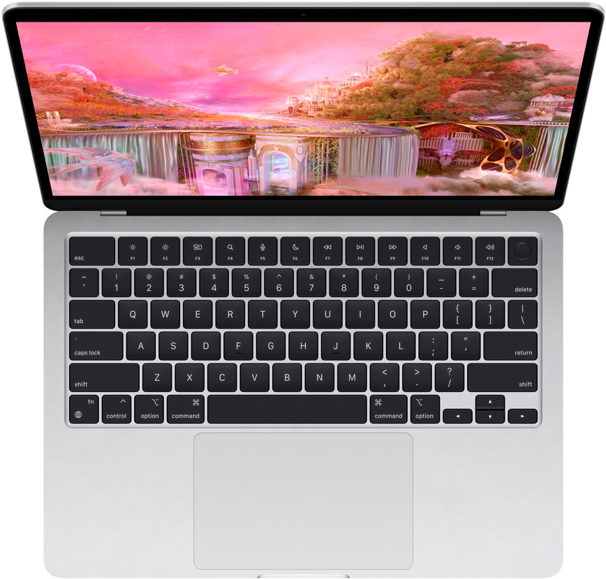

Mac OS
MacBook Air (M1 chip)

MacBook Air with M1 is an incredibly portable laptop — it’s nimble and quick, with a silent, fanless design and a beautiful Retina display. Thanks to its slim profile and all‑day battery life, this Air moves at the speed of lightness.
Specifications:
| Display |
33.74 cm (13.3”) Retina display1 |
Processor |
Apple M1 chip |
Weight |
1.29 kg |
Battery Life |
Up to 18 hours battery life3 |
Storage |
2TB (Maximum configurable storage) |
Camera |
720p FaceTime HD camera |
MacBook Air (M2 chip)

Redesigned around the next-generation M2 chip, MacBook Air is strikingly thin and brings exceptional speed and power efficiency within its durable all‑aluminium enclosure. It’s the ultra-fast, ultra-capable laptop that lets you work, play or create just about anything — anywhere.
Specifications:
| Display |
34.46 cm (13.6”) Liquid Retina display |
Processor |
Apple M2 chip |
Weight |
1.24 kg |
Battery Life |
Up to 18 hours battery life |
Storage |
2TB (Maximum configurable storage) |
Camera |
1080p FaceTime HD camera |
MacBook Pro 13
The new M2 chip makes the 13‑inch MacBook Pro more capable than ever. The same compact design supports up to 20 hours of battery life1 and an active cooling system to sustain enhanced performance. Featuring a brilliant Retina display, a FaceTime HD camera and studio‑quality mics, it’s our most portable pro laptop.
Specifications:
| Display |
33.74 cm |
Processor |
Apple M2 chip |
Weight |
1.38 kg |
Battery Life |
Up to 20 hours battery life |
Storage |
2TB (Maximum configurable storage2) |
Camera |
720p FaceTime HD camera |
Home